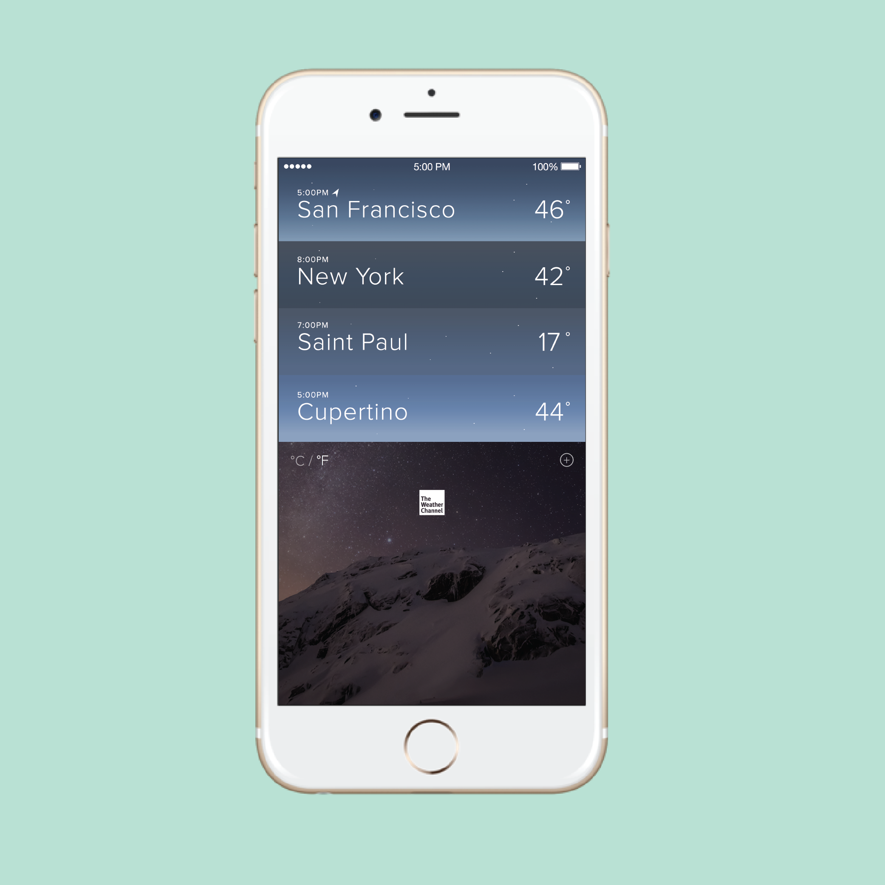

Weather App Redesign
Recently, I decided to redesign the default iOS weather application. I felt there was a better way to accomodate for users who checked the weather to figure out how to prepare for their day. In total, I added one additional interaction (by dividing up the daily and weekly information) and one major feature (by visualizing weather changes throughout the course of 24 hours).
Read About My Process
